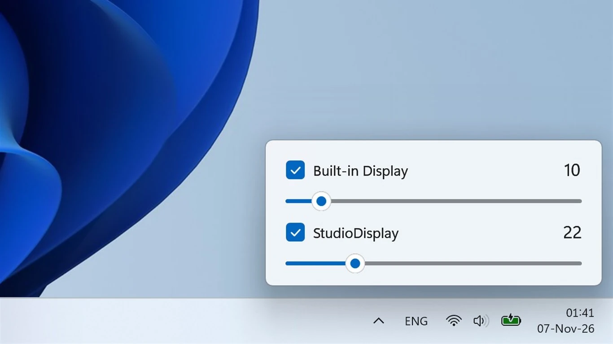

Guides › Windows
How to change Apple Studio Display brightness on Windows
Updated November 2026
Short answer: Windows has no brightness control for the Apple Studio Display, and the display has no buttons of its own. It takes its brightness over USB, the way a Mac sends it, so you need an app that talks to it, such as Brightly: scroll the mouse wheel over its tray icon, or use your keyboard's brightness keys.
Why Windows can't do it
Windows changes the brightness of a laptop's built-in screen, and of monitors that accept DDC/CI commands. The Studio Display and the LG UltraFine work another way: the brightness goes over the USB connection as a special command. Windows doesn't send it, so Settings > Display shows no slider and the screen stays where it was.
Change it with Brightly
- Install Brightly from the Microsoft Store and open it. Its icon appears next to the clock.
- Scroll the mouse wheel over the icon, or click it for a slider for each display.
- On a desktop PC, your keyboard's brightness keys change it too, in 2 % steps. Keyboard shortcuts such as Ctrl+Alt+↑ work on any keyboard.

Brightly reads the display's level each time, so a change made on a Mac stays when you plug it back into your PC.
Brightly for Windows
Brightness for every display, right from the taskbar. Try it free for 7 days.
Frequently asked questions
Does it work with the LG UltraFine too?
Yes. Brightly sets the LG UltraFine over USB the same way.
Does it work over Thunderbolt and USB-C docks?
Usually, as long as the display's USB connection reaches the PC. A dock that passes only the picture, not USB, can't carry the brightness.
Can I change several displays at once?
Yes. Tick the displays in Brightly's window, and the wheel and the keys change all the ticked ones together.